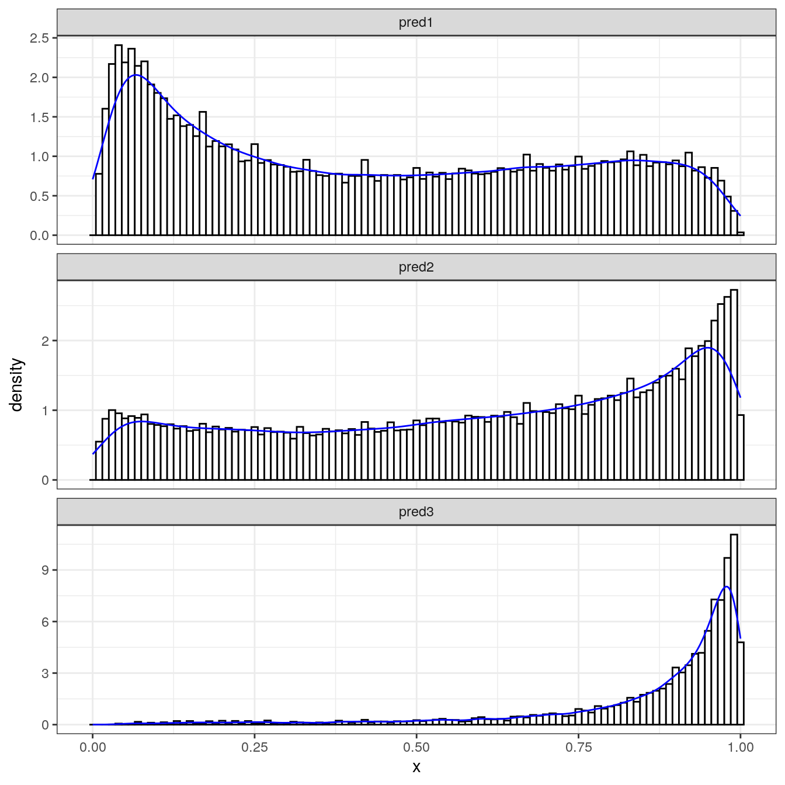

We can use the petler.fpca function to create the base functions required to run the PETLER algorithm. By default, you only need to provide data in the list format mentioned above. However, you can view the help documentation (?petler.fpca) or click HERE to customize configurable arguments.
system.time(obj <- petler.fpca(data_org))
## user system elapsed
## 142.076 18.887 75.564
saveRDS(obj, "step1.rds")DF.long <- rbind(
cbind(code = "pred1", obj$base[[1]]$mean),
cbind(code = "pred2", obj$base[[2]]$mean),
cbind(code = "pred3", obj$base[[3]]$mean))
data.table::data.table(DF.long)
## code x f_mu
## 1: pred1 0.0000 0.7077411
## 2: pred1 0.0025 0.7761086
## 3: pred1 0.0050 0.8467675
## 4: pred1 0.0075 0.9192670
## 5: pred1 0.0100 0.9931133
## ---
## 1199: pred3 0.9900 7.1296992
## 1200: pred3 0.9925 6.6896645
## 1201: pred3 0.9950 6.1782279
## 1202: pred3 0.9975 5.6109825
## 1203: pred3 1.0000 5.0067372TrainCode <- data_org$TrainCode
TrainCode[, monthstd := month / fu_time]
DF.t <- rbind(
data.frame(code = "pred1", t = with(TrainCode, rep(monthstd, pred1))),
data.frame(code = "pred2", t = with(TrainCode, rep(monthstd, pred2))),
data.frame(code = "pred3", t = with(TrainCode, rep(monthstd, pred3))))library(ggplot2)
ggplot(DF.t, aes(x = t)) +
geom_histogram(aes(y = ..density..), color="black", fill="white", binwidth = 0.01) +
geom_line(aes(x = x, y = f_mu), data = DF.long, colour = "blue") +
facet_wrap(~ code, ncol = 1, scales = "free_y") +
xlab("x") + theme_bw()